Xiongkuo Min (闵雄阔)
Xiongkuo Min |
About me
I'm currently an Associate Professor (tenure-track) with the Institute of Image Communication and Network Engineering, Department of Electronic Engineering, Shanghai Jiao Tong University, where I joined in Oct. 2021.
I received my B.E. degree from Wuhan University, Wuhan, China, in 2013, and my Ph.D. degree from Shanghai Jiao Tong University, Shanghai, China, in 2018. From Jun. 2018 to Sept. 2021, I did my Postdoc at Shanghai Jiao Tong University. From Jan. 2016 to Jan. 2017, I was a visiting PhD student at University of Waterloo. From Jan. 2019 to Jan. 2021, I was a visiting scholar at The University of Texas at Austin and the University of Macau.
My research interests lie in the fields of multimedia, image/video processing, computer vision, and artificial intelligence, and particularly in:
Image/video/audio quality assessment
Visual attention analysis and prediction
Visual enhancement and restoration
Multimodal information fusion
VR/AR/XR and metaverse
Virtual digital human
AI for healthcare
Looking for self-motivated students (Ph.D., master, and undergraduate students) working with me. For prospective students, please send me an email with your CV and transcript.
There is one master position available in Fall 2024. Please feel free to contact me if interested.
News
07/2023, We receive the IEEE MSA-TC Best Paper Award - Honorable Mention.
06/2023, Undergraduate from our group wins the Best Bachelor Thesis Award of SJTU (Top 1%)
03/2023, Our survey paper wins the Hot Paper Award of SCIENCE CHINA Information Sciences
11/2022, We receive the First Prize of the Technological Invention Award of CSIG (中国图象图形学学会技术发明一等奖)
11/2022, We receive the Second Prize of the Teaching Achievement Award of CSIG (中国图象图形学学会教学成果二等奖)
10/2022, We receive the First Prize of the IEEE ICIP Grand Challenge on Video Surveillance Quality Assessment
09/2022, I'm sponsored by NSFC (general program)
09/2022, I'm sponsored by Shanghai Pujiang Talent Program
06/2022, We receive the Best Paper Award of IEEE BMSB
10/2021, I join Shanghai Jiao Tong University as a tenure-track Associate Professor
09/2021, I'm sponsored by NSFC (young scholar program)
07/2021, We receive the First Place Award of IEEE ICME Grand Challenge on Quality Assessment of Compressed UGC Videos
06/2021, We receive the Best Paper Runner-up Award of IEEE Transactions on Multimedia
02/2021, I received the Excellent Ph.D. Thesis Award of Chinese Institute of Electronics (CIE) (中国电子学会优博)
07/2019, We receive the Best Paper Award of IEEE International Workshop on Mobile Multimedia Computing (in conjunction with IEEE ICME)
12/2018, I'm sponsored by the Shanghai Super-Postdoc Incentive Plan
07/2018, We receive the Grand Prize of IEEE ICME Salient360! Grand Challenge
06/2018, I'm sponsored by the National Postdoctoral Program for Innovative Talents
06/2018, I pass my Ph.D. defense
07/2017, We receive the Special Award of IEEE ICME Salient360! Grand Challenge
07/2016, We receive the Best Student Paper Award of IEEE ICME
Selected Publications
More on Publication page.
Screen Content Quality Assessment: Overview, Benchmark, and Beyond
Xiongkuo Min, Ke Gu, Guangtao Zhai, Xiaokang Yang, Wenjun Zhang, Patrick Le Callet, and Chang Wen Chen
ACM Computing Surveys (CSUR), vol. 54, no. 9, pp. 1-36, 2022.
ESI Highly Cited Paper
Study of Subjective and Objective Quality Assessment of Audio-Visual Signals
Xiongkuo Min, Guangtao Zhai, Jiantao Zhou, Mylene C.Q. Farias, and Alan Conrad Bovik
IEEE Transactions on Image Processing (TIP), vol. 29, pp. 6054–6068, 2020.
[Code] [LIVE-SJTU A/V-QA Database]
A Multimodal Saliency Model for Videos With High Audio-Visual Correspondence
Xiongkuo Min, Guangtao Zhai, Jiantao Zhou, Xiao-Ping Zhang, Xiaokang Yang, and Xinping Guan
IEEE Transactions on Image Processing (TIP), vol. 29, pp. 3805-3819, 2020.
[Code] [AVA Database]
Perceptual Image Quality Assessment: A Survey
Guangtao Zhai, and Xiongkuo Min
SCIENCE CHINA Information Sciences, vol. 63, no. 11, pp. 211301, 2020.
Hot Paper Award, ESI Highly Cited Paper
Blind Quality Assessment Based on Pseudo Reference Image
Xiongkuo Min, Ke Gu, Guangtao Zhai, Jing Liu, Xiaokang Yang, and Chang Wen Chen
IEEE Transactions on Multimedia (TMM), vol. 20, no. 20, pp. 2049-2062, 2018.
[Code: BPRI]
Best Paper Runner-up Award, ESI Highly Cited Paper
Blind Image Quality Estimation via Distortion Aggravation
Xiongkuo Min, Guangtao Zhai, Ke Gu, Yutao Liu, and Xiaokang Yang
IEEE Transactions on Broadcasting (TBC), vol. 64, no. 2, pp. 508-517, 2018.
[Code: BMPRI]
Unified Blind Quality Assessment of Compressed Natural, Graphic, and Screen Content Images
Xiongkuo Min, Kede Ma, Ke Gu, Guangtao Zhai, Zhou Wang, and Weisi Lin
IEEE Transactions on Image Processing (TIP), vol. 26, no. 11, pp. 5462-5474, 2017.
[Project] [Code: UCA] [Database: CCT]
ESI Hot Paper
Featured Research
| 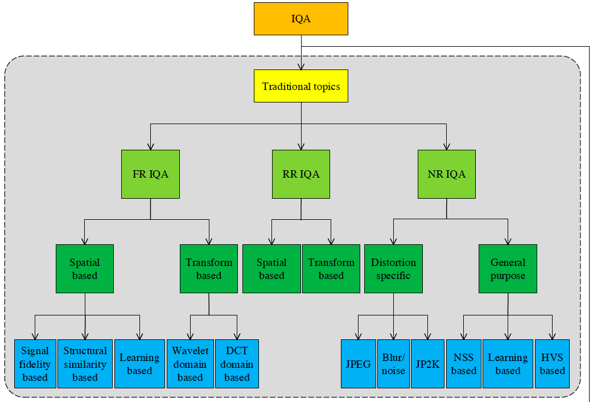 | Surveys for Perceptual Quality Assessment - [SCIS] Perceptual Image Quality Assessment: A Survey X. Min, K. Gu, G. Zhai, X. Yang, W. Zhang, P. L. Callet, and C. W. Chen, ACM Computing Surveys, vol. 54, no. 9, pp. 1-36, 2022. ESI Highly Cited Paper |
| 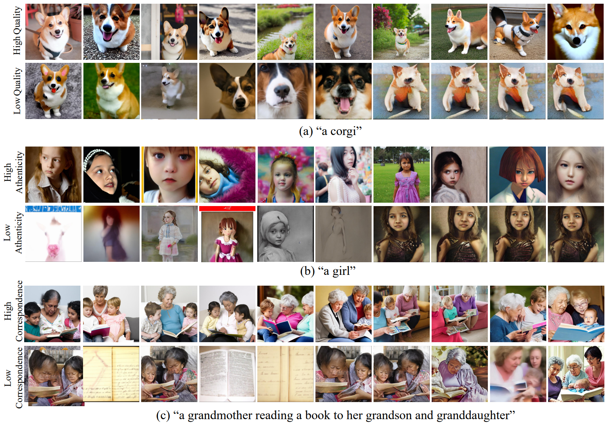 | AIGC Image Quality Assessment - [IEEE TCSVT] AGIQA-3K: An Open Database for AI-Generated Image Quality AssessmentC. Li, Z. Zhang, H. Wu, W. Sun, X. Min, X. Liu, G. Zhai, and W. Lin, IEEE TCSVT, 2023. [Database] - [CICAI] AIGCIQA2023: A Large-scale Image Quality Assessment Database for AI Generated Images: From the Perspectives of Quality, Authenticity and Correspondence J. Wang, H. Duan, J. Liu, S. Chen, X. Min, and G. Zhai, CICAI, 2023. [Database] |
| 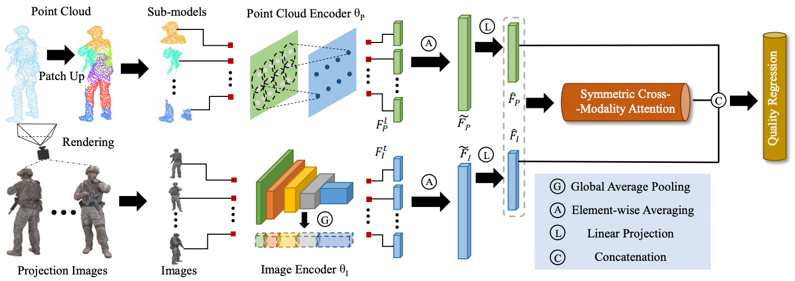 | Point Cloud, Mesh Quality Assessment - [IJCAI] MM-PCQA: Multi-Modal Learning for No-reference Point Cloud Quality AssessmentZ. Zhang, W. Sun, X. Min, Q. Zhou, J. He, Q. Wang, and G. Zhai, IJCAI, 2023. [Code] - [IEEE TCSVT] No-Reference Quality Assessment for 3D Colored Point Cloud and Mesh Models Z. Zhang, W. Sun, X. Min, T. Wang, W. Lu, and G. Zhai, IEEE TCSVT, vol. 32, no. 11, pp. 7618-7631, 2022. [Code] |
| 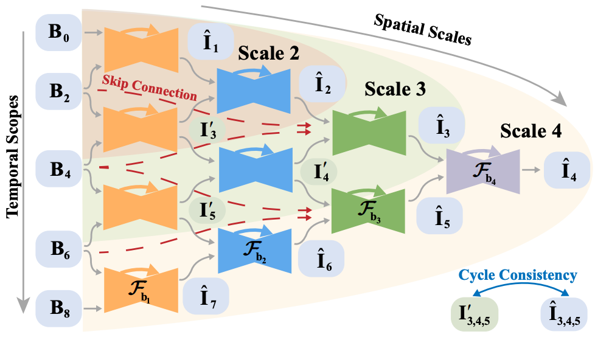 | Image/Video Enhancement/Restoration/Interpolation etc. - [IEEE CVPR] Blurry Video Frame InterpolationW. Shen, W. Bao, G. Zhai, L. Chen, X. Min, and Z. Gao, IEEE/CVF CVPR, 2020, pp. 5114-5123. [Project & Code] - [IEEE TIP] Video Frame Interpolation and Enhancement via Pyramid Recurrent Framework W. Shen, W. Bao, G. Zhai, L. Chen, X. Min, and Z. Gao, IEEE TIP, vol. 30, pp. 277-292, 2021. [Project & Code] - [IEEE TIP] Self-Conditioned Probabilistic Learning of Video Rescaling Y. Tian, G. Lu, X. Min, Z. Che, G. Zhai, G. Guo, and Z. Gao, IEEE/CVF ICCV, 2021, pp. 4490-4499. [Code] - [IEEE TMM] Develop then Rival: A Human Vision-Inspired Framework for Superimposed Image Decomposition H. Duan, W. Shen, X. Min, Y. Tian, J.-H. Jung, X. Yang, and G. Zhai, IEEE TMM, 2022. - [IEEE TGRS] Implicit Neural Representation Learning for Hyperspectral Image Super-Resolution K. Zhang, D. Zhu, X. Min, and G. Zhai, IEEE TGRS, vol. 61, pp. 1-12, 2022. - [IEEE TMC] Dynamic Backlight Scaling Considering Ambient Luminance for Mobile Videos on LCD Displays W. Sun, X. Min, G. Zhai, K. Gu, S. Ma, and X. Yang, IEEE TMC, vol. 21, no. 1, pp. 110-124, 2022. [Database] |
| 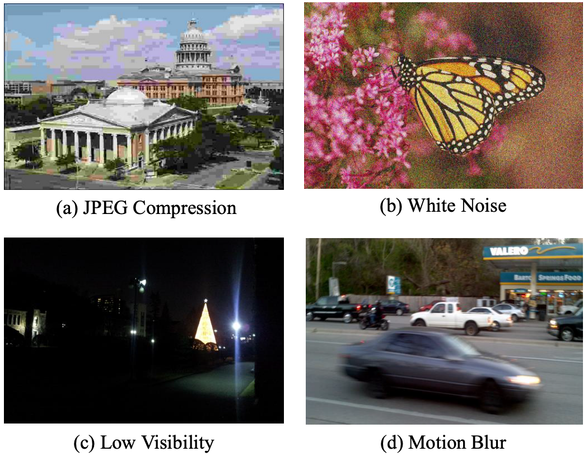 | Image Quality Assessment in-the-Wild - [IEEE JSTSP] Blind Quality Assessment for in-the-Wild Images via Hierarchical Feature Fusion and Iterative Mixed Database TrainingW. Sun, X. Min, D. Tu, S. Ma, and G. Zhai, IEEE JSTSP, 2023. [Code] - [IEEE TMM] Blind Image Quality Assessment Via Cross-View Consistency Y. Zhu, Y. Li, W. Sun, X. Min, G. Zhai, and X. Yang, IEEE TMM, vol. 25, pp. 7364-7377, 2022. - [IEEE TCSVT] Synergetic Assessment of Quality and Aesthetic: Approach and Comprehensive Benchmark Dataset K. Zhang, D. Zhu, X. Min, Z. Gao, and G. Zhai, IEEE TCSVT, 2023. - [NeurIPS] Perceptual Attacks of No-Reference Image Quality Models with Human-in-the-Loop W. Zhang, D. Li, X. Min, G. Zhai, G. Guo, X. Yang, and K. Ma, NeurIPS, 2022, vol. 35, pp. 2916-2929. [Code] |
| 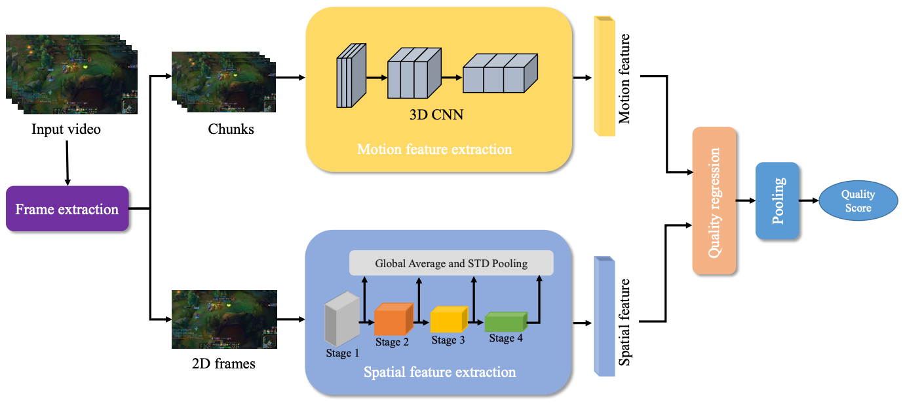 | Video Quality Assessment in-the-Wild - [ACM MM] A Deep Learning based No-reference Quality Assessment Model for UGC VideosW. Sun, X. Min, W. Lu, and G. Zhai, ACM MM, 2022, pp. 856-865. [Code] - [IEEE CVPR] MD-VQA: Multi-Dimensional Quality Assessment for UGC Live Videos Z. Zhang, W. Wu, W. Sun, D. Tu, W. Lu, X. Min, Y. Chen, and G. Zhai, IEEE/CVF CVPR, 2023, 1746-1755. [Database] - [IEEE ICMEW] Deep Learning Based Full-Reference and No-Reference Quality Assessment Models for Compressed UGC Videos W. Sun, T. Wang, X. Min, F. Yi, and G. Zhai, IEEE ICMEW, 2021, pp. 1-6. [Code] First Place Award of IEEE ICME 2021 Grand Challenge on Quality Assessment of Compressed UGC Videos |
| 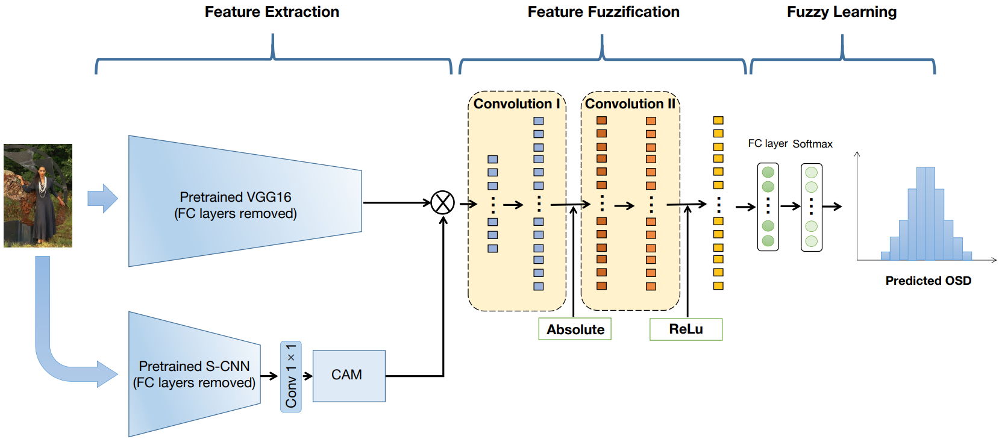 | Blind IQA with Opinion Score Distributions - [ACM MM] Image Quality Assessment: From Mean Opinion Score to Opinion Score DistributionY. Gao, X. Min, Y. Zhu, J. Li, X.-P. Zhang, and G. Zhai, ACM MM, 2022, pp. 997–1005. [Code] - [IEEE TCSVT] Blind Image Quality Assessment: A Fuzzy Neural Network for Opinion Score Distribution Prediction Y. Gao, X. Min, Y. Zhu, X.-P. Zhang, and G. Zhai, IEEE TCSVT, 2023. [Code] - [IEEE TCSVT] Image Quality Score Distribution Prediction via Alpha Stable Model Y. Gao, X. Min, W. Zhu, X.-P. Zhang, and G. Zhai, IEEE TCSVT, vol. 33, no. 6, pp. 2656-2671, 2023. [Database & Code] |
| 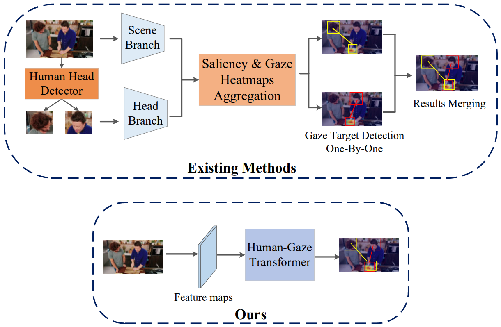 | Human Gaze and Human-Object Interaction Detection - [IEEE CVPR] End-to-End Human-Gaze-Target Detection with TransformersD. Tu, X. Min, H. Duan, G. Guo, G. Zhai, and W. Shen, IEEE/CVF CVPR, 2022, pp. 2192-2200. - [IEEE TCSVT] Un-Gaze: A Unified Transformer for Joint Gaze-Location and Gaze-Object Detection D. Tu, W. Shen, W. Sun, X. Min, G. Zhai, and C. W. Chen, IEEE TCSVT, 2023. - [NeurIPS] Video-based Human-Object Interaction Detection from Tubelet Tokens D. Tu, W. Sun, X. Min, G. Zhai, and W. Shen, NeurIPS, 2022, vol. 35, pp. 23345-23357. - [ECCV] Iwin: Human-Object Interaction Detection via Transformer with Irregular Windows D. Tu, X. Min, H. Duan, G. Guo, G. Zhai, and W. Shen, ECCV, 2022, pp. 87-103. |
 |
Information Hiding - [IEEE CVPR] Learning Invisible Markers for Hidden Codes in Offline-to-online PhotographyJ. Jia, Z. Gao, D. Zhu, X. Min, G. Guo, and G. Zhai, IEEE/CVF CVPR, 2022, pp. 2273-2282. - [IEEE TCYB] RIHOOP: Robust Invisible Hyperlinks in Offline and Online Photographs J. Jia, Z. Gao, K. Chen, M. Hu, X. Min, G. Zhai, and X. Yang, IEEE TCYB, vol. 52, no. 7, pp. 7094-7106, 2022. - [IEEE TMM] RIVIE: Robust Inherent Video Information Embedding J. Jia, Z. Gao, D. Zhu, X. Min, M. Hu, and G. Zhai, IEEE TMM, vol. 25, pp. 7607-7620, 2023. |
 |
Quality Assessment for Specific Applications - [IEEE TIP] A Metric for Light Field Reconstruction, Compression, and Display Quality EvaluationX. Min, J. Zhou, G. Zhai, P. L. Callet, X. Yang, and X. Guan, IEEE TIP, vol. 29, pp. 3790-3804, 2020. [Code] - [IEEE TMI] Blind Image Quality Assessment for Pathological Microscopic Image under Screen and Immersion Scenarios Y. Guo, M. Hu, X. Min, Y. Wang, M. Dai, G. Zhai, X.-P. Zhang, and X. Yang, IEEE TMI, 2023. [Database & Code] - [IEEE TBC] Deep Neural Network for Blind Visual Quality Assessment of 4K Content W. Lu, W. Sun, X. Min, W. Zhu, Q. Zhou, J. He, Q. Wang, Z. Zhang, T. Wang, and G. Zhai, IEEE TBC, vol. 69, no. 2, pp. 406-421, 2023. - [IEEE ToG] A Deep Learning Based Multi-Dimensional Aesthetic Quality Assessment Method for Mobile Game Images T. Wang, W. Sun, W. Wu, Y. Chen, X. Min, W. Lu, Z. Zhang, and G. Zhai, IEEE ToG, 2022. - [IEEE TBC] A Wavelet-Predominant Algorithm Can Evaluate Quality of THz Security Image and Identify Its Usability M. Hu, G. Zhai, R. Xie, X. Min, Q. Li, and X. Yang, IEEE TBC, vol. 66, no. 1, pp. 140-152, 2020. [Database] - [IEEE ICIP] Surveillance Video Quality Assessment Based on Quality Related Retraining Z. Zhang, W. Lu, W. Sun, X. Min, T. Wang, and G. Zhai, IEEE ICIP, 2022, pp. 4278-4282. The First Prize of the IEEE ICIP Grand Challenge - Video Distortion Detection and Classification in the Context of Video Surveillance |
| 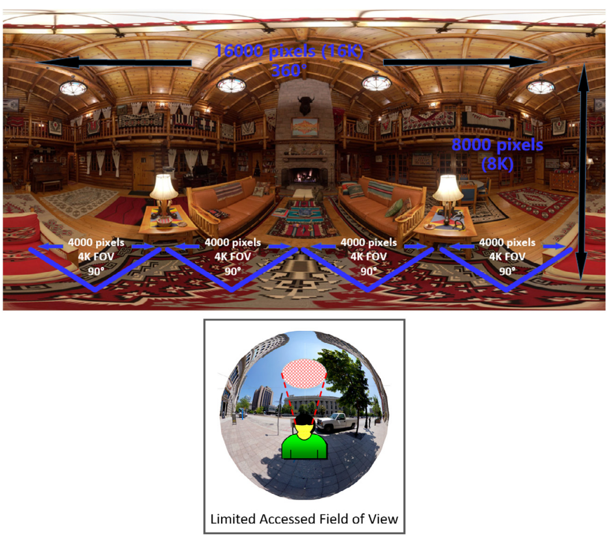 | Visual Attention Prediction in Virtual Reality - [ACM TOMM] Learning a Deep Agent to Predict Head Movement in 360-Degree ImagesY. Zhu, G. Zhai, X. Min, and J. Zhou, ACM TOMM, vol. 16, no. 4, pp. 130:1-130:23, 2020. - [IEEE TMM] The Prediction of Saliency Map for Head and Eye Movements in 360 Degree Images Y. Zhu, G. Zhai, X. Min, and J. Zhou, IEEE TMM, vol. 22, no. 9, pp. 2331-2344, 2020. - [SPIC] The Prediction of Head and Eye Movement for 360 Degree Images Y. Zhu, G. Zhai, and X. Min, SPIC, vol. 69, pp. 15-25, 2018. Special Award of IEEE ICME 2017 Salient360! Grand Challenge - [IEEE TCSVT] Viewing Behavior Supported Visual Saliency Predictor for 360 Degree Videos Y. Zhu, G. Zhai, Y. Yang, H. Duan, X. Min, and X. Yang, IEEE TCSVT, vol. 32, no. 7, pp. 4188-4201, 2022. Grand Prize of IEEE ICME 2018 Salient360! Grand Challenge - [IEEE TMM] Unified Audio-visual Saliency Model for Omnidirectional Videos with Spatial Audio D. Zhu, K. Zhang, N. Zhang, Q. Zhou, X. Min, G. Zhai, and X. Yang, IEEE TMM, 2023. |
| 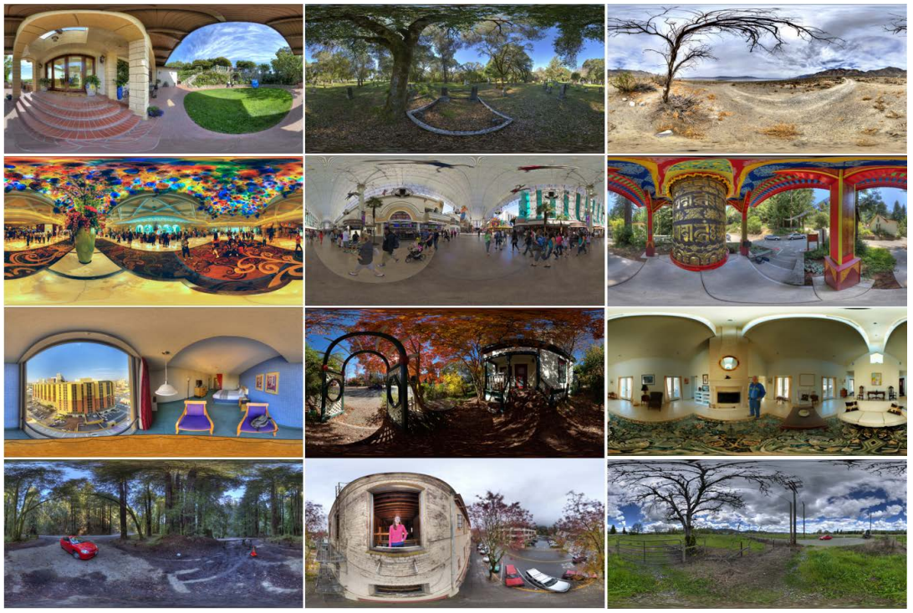 | Quality Assessment and Transmission in Virtual Reality - [IEEE JSTSP] MC360IQA: The Multi-Channel CNN for Blind 360-Degree Image Quality AssessmentW. Sun, X. Min, G. Zhai, K. Gu, H. Duan, and S. Ma, IEEE JSTSP, vol. 14, no. 1, pp. 64-77, 2020. [Code] [Database] - [IEEE ISCAS] Perceptual Quality Assessment of Omnidirectional Images H. Duan, G. Zhai, X. Min, Y. Zhu, Y. Fang, X. Yang, IEEE ISCAS, 2018, pp. 1-5. [Database] - [IEEE JSTSP] Attentive Deep Image Quality Assessment for Omnidirectional Stitching L. Teng, G. Zhai, Y. Wu, X. Min, W. Zhang, Z. Ding, and C. Xiao, IEEE TWC, vol. 21, no. 1, pp. 18-33, 2022. |
| 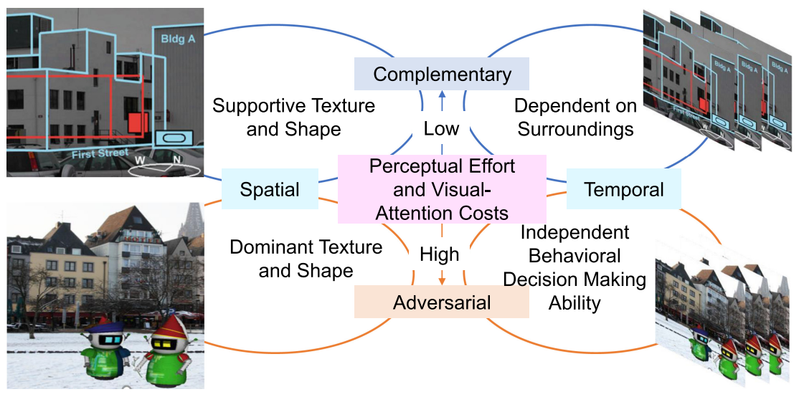 | Attention and Experience Prediction in Augmented Reality - [ACM MM] Saliency in Augmented RealityH. Duan, W. Shen, X. Min, D. Tu, J. Li, and G. Zhai, ACM MM, 2022, pp. 6549-6558. [Code & Database] - [ACM TOMM] Toward Visual Behavior and Attention Understanding for Augmented 360 Degree Videos Y. Zhu, X. Min, D. Zhu, G. Zhai, X. Yang, W. Zhang, K. Gu, and J. Zhou, ACM TOMM, vol. 19, no. 2s, pp. 99:1-99:24, 2023. - [IEEE TIP] Confusing Image Quality Assessment: Toward Better Augmented Reality Experience H. Duan, X. Min, Y. Zhu, G. Zhai, X. Yang, and P. L. Callet, IEEE TIP, vol. 31, pp. 7206-7221, 2022. [Code & Database] - [IEEE BMSB] Augmented Reality Image Quality Assessment Based on Visual Confusion Theory H. Duan, L. Guo, W. Sun, X. Min, L. Chen, and G. Zhai, IEEE BMSB, 2022, pp. 1-6. [Code & Database] Best Paper Award |
| 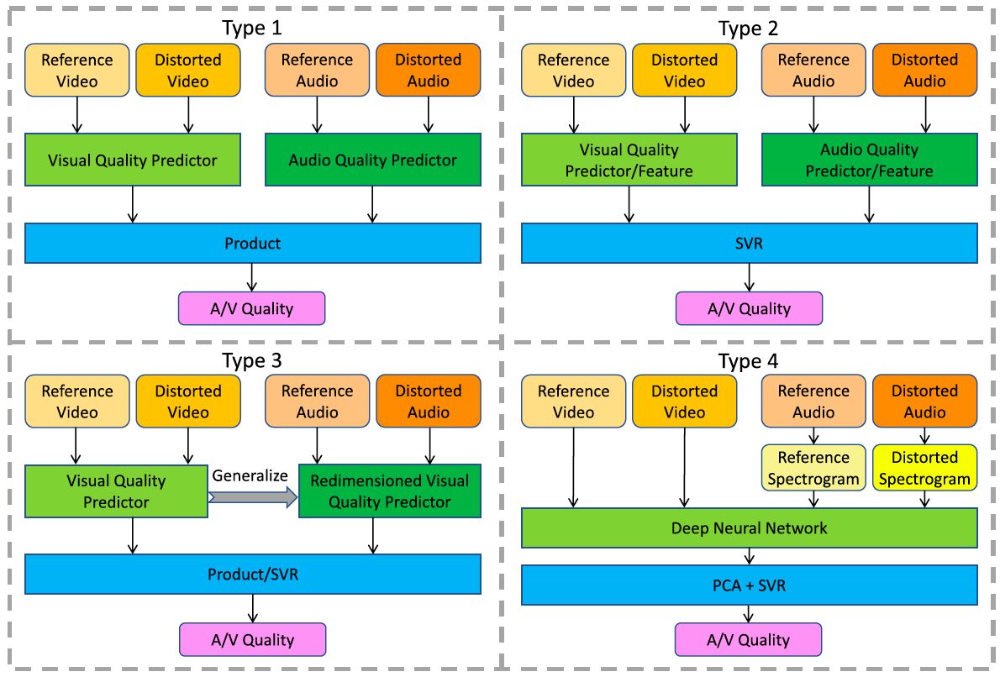 | Audio-Visual Quality Assessment - [IEEE TIP] Study of Subjective and Objective Quality Assessment of Audio-Visual SignalsX. Min, G. Zhai, J. Zhou, M. C.Q. Farias, and A. C. Bovik, IEEE TIP, vol. 29, pp. 6054–6068, 2020. [Code] [LIVE-SJTU A/V-QA Database] - [IEEE TIP] Attention-Guided Neural Networks for Full-Reference and No-Reference Audio-Visual Quality Assessment Y. Cao, X. Min, W. Sun, and G. Zhai, IEEE TIP, vol. 32, pp. 1882-1896, 2023. [Code] - [IEEE TIP] Subjective and Objective Audio-Visual Quality Assessment for User Generated Content Y. Cao, X. Min, W. Sun, and G. Zhai, IEEE TIP, 2023. |
| 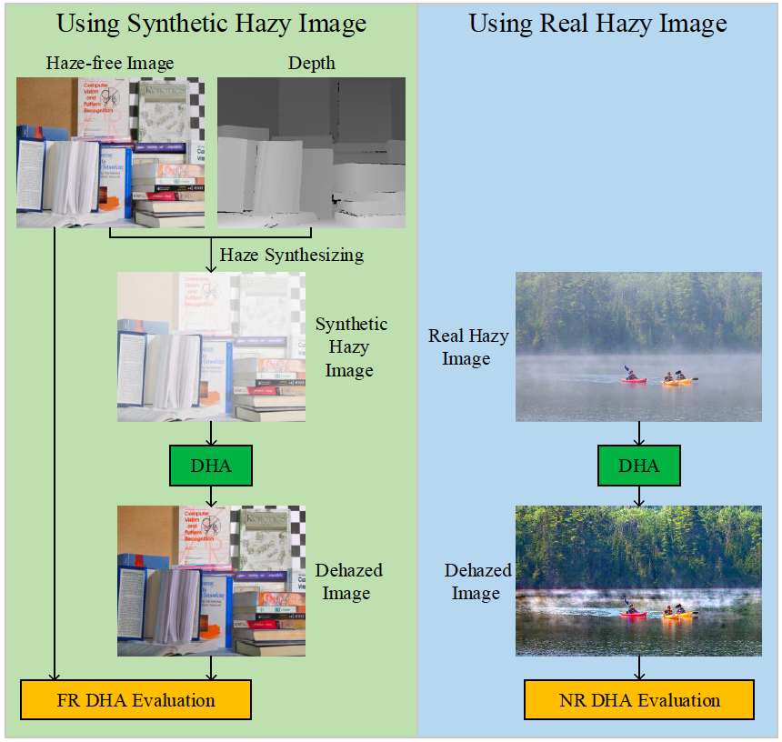 | Quality Assessment for Enhancement (Haze, Light, Stability, etc.) - [IEEE TMM] Quality Evaluation of Image Dehazing Methods Using Synthetic Hazy ImagesX. Min, G. Zhai, K. Gu, Y. Zhu, J.o Zhou, G. Guo, X. Yang, X. Guan, and W. Zhang, IEEE TMM, vol. 21, no. 9, pp. 2319-2333, 2019. [Code: DEHAZEfr] [Database: SHRQ] - [IEEE TITS] Objective Quality Evaluation of Dehazed Images X. Min, G. Zhai, K. Gu, X. Yang, and X. Guan, IEEE TITS, vol. 20, no. 9, pp. 2879-2892, 2019. [Code: DHQI] [Database: DHQ] [Database: rDHAZY] [Database: rFRIDA] - [IEEE TITS] HazDesNet: An End-to-End Network for Haze Density Prediction J. Zhang, X. Min, Y. Zhu, G. Zhai, J. Zhou, X. Yang, and W. Zhang, IEEE TITS, vol. 23, no. 4, pp. 3087-3102, 2020. [Code & Database] - [ACM TOMM] Perceptual Quality Assessment of Low-light Image Enhancement G. Zhai, W. Sun, X. Min, and J. Zhou, ACM TOMM, vol. 17, no. 4, pp. 130:1-130:24, 2021. [Code: LIEQA] [Database: LIEQ] - [ACM MM] StableVQA: A Deep No-Reference Quality Assessment Model for Video Stability T. Kou, X. Liu, W. Sun, J. Jia, X. Min, G. Zhai, and N. Liu, ACM MM, 2023. [Code] - [IEEE CVPRW] VDPVE: VQA Dataset for Perceptual Video Enhancement Y. Gao, Y. Cao, T. Kou, W. Sun, Y. Dong, X. Liu, X. Min, and G. Zhai, IEEE/CVF CVPRW, 2023, pp. 1474-1483. [Challenge] [Database] |
 |
Screen Content Quality Assessment - [ACM CSUR] Screen Content Quality Assessment: Overview, Benchmark, and BeyondX. Min, K. Gu, G. Zhai, X. Yang, W. Zhang, P. L. Callet, and C. W. Chen, ACM Computing Surveys, vol. 54, no. 9, pp. 1-36, 2022. ESI Highly Cited Paper - [IEEE TIP] Unified Blind Quality Assessment of Compressed Natural, Graphic, and Screen Content Images X. Min, K. Ma, K. Gu, G. Zhai, Z. Wang, and W. Lin, IEEE TIP, vol. 26, no. 11, pp. 5462-5474, 2017. [Project] [Code: UCA] [Database: CCT] ESI Hot Paper - [IEEE TBC] Subjective and Objective Quality Assessment of Compressed Screen Content Videos T. Li, X. Min, H. Zhao, G. Zhai, Y. Xu, and W. Zhang, IEEE TBC, vol. 67, no. 2, pp. 438-449, 2021. [Database] - [IEEE TVCG] Evaluating Quality of Screen Content Images Via Structural Variation Analysis K. Gu, J. Qiao, X. Min, G. Yue, W. Lin, and D. Thalmann, IEEE TVCG, vol. 24, no. 10, pp. 2689-2701, 2018. [Code] - [IEEE TIE] A Fast Reliable Image Quality Predictor by Fusing Micro- and Macro-Structures K. Gu, L. Li, H. Lu, X. Min, and W. Lin, IEEE TIE, vol. 64, no. 5, pp. 3903-3912, 2017. [Code] ESI Highly Cited Paper - [SP] Saliency-Induced Reduced-Reference Quality Index for Natural Scene and Screen Content Images X. Min, K. Gu, G. Zhai, M. Hu, and X. Yang, SP, vol. 145, pp. 127-136, 2018. [Code] |
| 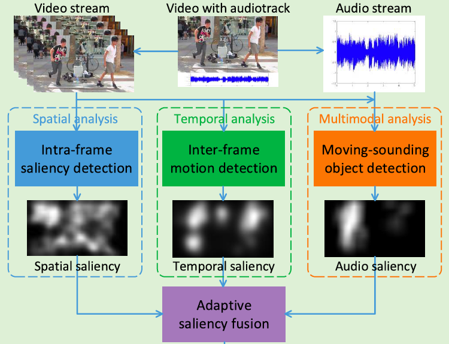 | Multimodal (Audio, Visual, Text, etc.) Saliency Prediction - [IEEE TIP] A Multimodal Saliency Model for Videos With High Audio-Visual CorrespondenceX. Min, G. Zhai, J. Zhou, X.-P. Zhang, X. Yang, and X. Guan, IEEE TIP, vol. 29, pp. 3805-3819, 2020. [Code] [AVA Database] - [ACM TOMM] Fixation Prediction through Multimodal Analysis X. Min, G. Zhai, K. Gu, and X. Yang, ACM TOMM, vol. 13, no. 1, pp. 6:1-6:23, 2017. [Code] [Database] - [IEEE TIP] How is Gaze Influenced by Image Transformations? Dataset and Model Z. Che, A. Borji, G. Zhai, X. Min, G. Guo, and P. L. Callet, IEEE TIP, vol. 29, pp. 2287-2300, 2020. [Code] [Database] - [ACM TOMM] A Novel Lightweight Audio-visual Saliency Model for Videos D. Zhu, X. Shao, Q. Zhou, X. Min, G. Zhai, and X. Yang, ACM TOMM, vol. 19, no. 4, pp. 147:1-147:22, 2023. - [IEEE ISCAS] The Influence of Text-guidance on Visual Attention Y. Sun, X. Min, H. Duan, and G. Zhai, IEEE ISCAS/, 2023, pp.1-5. IEEE MSA-TC Best Paper Award - Honorable Mention |
| 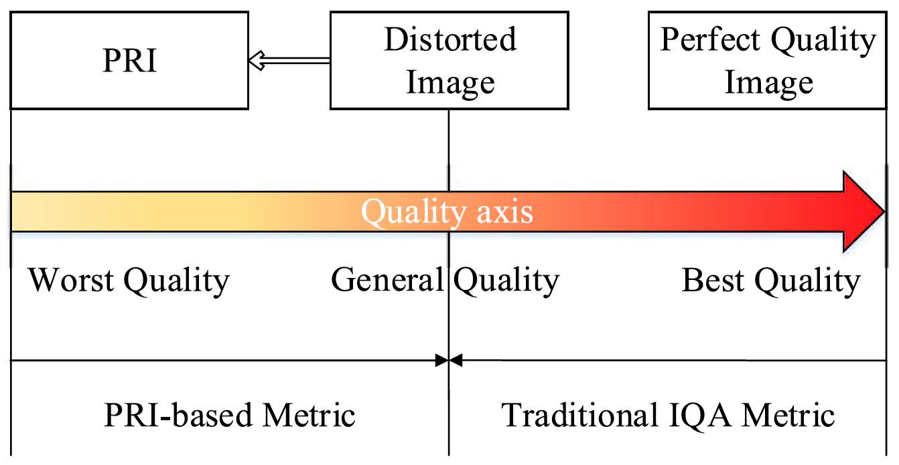 | BIQA Based on Pseudo References - [IEEE TMM] Blind Quality Assessment Based on Pseudo Reference ImageX. Min, K. Gu, G. Zhai, J. Liu, X. Yang, and C. W. Chen, IEEE TMM, vol. 20, no. 20, pp. 2049-2062, 2018. [Code: BPRI] Best Paper Runner-up Award, ESI Highly Cited Paper - [IEEE TBC] Blind Image Quality Estimation via Distortion Aggravation X. Min, G. Zhai, K. Gu, Y. Liu, and X. Yang, IEEE TBC, vol. 64, no. 2, pp. 508-517, 2018. [Code: BMPRI] - [IEEE ICME] Blind Quality Assessment of Compressed Images via Pseudo Structural Similarity X. Min, G. Zhai, K. Gu, Y. Fang, X. Yang, X. Wu, J. Zhou, and X. Liu, IEEE ICME, 2016, pp. 1-6. [Code] Best Student Paper Award |
Contact
Office: #5-100 SEIEE Building, Shanghai Jiao Tong University
Mail: #5-100 SEIEE Building, 800 Dong Chuan Rd, Shanghai 200240, China
Web: XXXXXX
Email: minxiongkuo@sjtu.edu.cn OR minxiongkuo@gmail.com